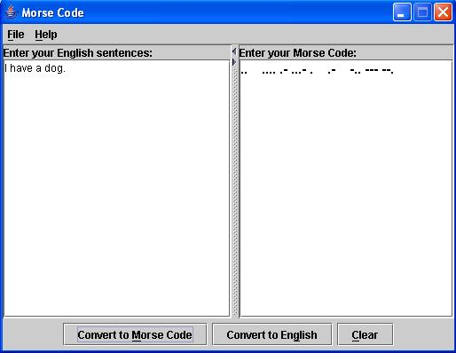
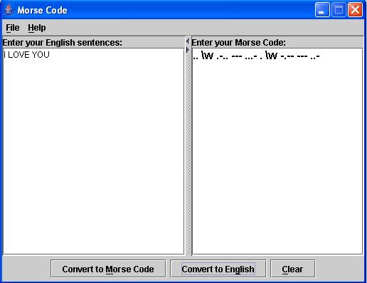

Morse Code was developed by Samuel Morse in 1832 for use
with the telegraph system.
In Morse Code, each letter of
the alphabet and numerals are represented by a combination
of dots and dashes. In a sound-oriented systems, the dot
represents a short sound while
the dash represents a long
sound.
Convert from English to Morse Code

Figure 1 Convert from English to Morse Code
Note: Each Morse-coded letter is separated by a
space and each Morse-coded word is
separated by three spaces.
Convert from Morse Code to English

Figure 2 Convert from Morse Code to English
| Character | Code | Character | Code |
|---|---|---|---|
| A | .- | T | - |
| B | -... | U | ..- |
| C | -.-. | V | ...- |
| D | -.. | W | .-- |
| E | . | X | -..- |
| F | ..-. | Y | -.-- |
| G | --. | Z | --.. |
| H | .... | 1 | .---- |
| I | .. | 2 | ..--- |
| J | .--- | 3 | ...-- |
| K | -.- | 4 | ....- |
| L | .-.. | 5 | ..... |
| M | -- | 6 | -.... |
| N | -. | 7 | --... |
| O | --- | 8 | ---.. |
| P | .--. | 9 | ----. |
| Q | --.- | 0 | ----- |
| R | .-. | ||
| S | ... |
Morse Code Version 1.0
For comments, suggestions & questions:
melodyking_2000@
yahoo.com